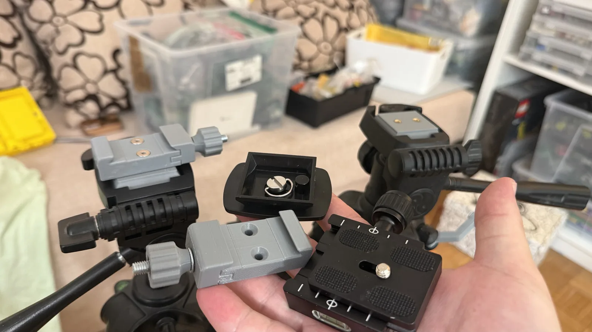

← все заметки
25.08.2026#слайдер #самоделки #3д-печать
Заканчивая работу над слайдером, задумался и о том, на чём он стоит. Стоит он на штативах со стандартными бюджетными ромбовидными креплениями. На деле такие крепления не очень удобны для объёмной и тяжёлой техники — на них хорошо ставить разве что лёгкие камеры и телефоны в держателях. Для слайдера такой тип крепления вообще неудобен: снять его или поставить обратно — та ещё морока.
Я вспомнил, что уже какое-то время потихоньку пополняю коллекцию съёмочного оборудования креплениями типа Arca-Swiss. Они смещаются вбок, легко зажимаются, и слайдер можно быстро подстроить под нужную позицию или вовсе снять со штатива. Мог заказать пару таких креплений баксов за 20–30, но решил, что могу распечатать их на 3D-принтере здесь и сейчас — разве что придётся скататься на велосипеде в магазин за болтами. Да и покупные площадки всё равно пришлось бы как-то колхозить под штатив.
И вот что получилось.
Снизу справа — заводское крепление Arca-Swiss вместе с площадкой, слева от него — такое же крепление, распечатанное на 3D-принтере. Над ним, в перевёрнутом положении, — стандартное крепление от дешёвого штатива. Сверху справа — крепление с вплавленными втулками, к которому можно прикрутить уже установленное на штатив. А слева — уже полностью готовая, установленная площадка.
Я вспомнил, что уже какое-то время потихоньку пополняю коллекцию съёмочного оборудования креплениями типа Arca-Swiss. Они смещаются вбок, легко зажимаются, и слайдер можно быстро подстроить под нужную позицию или вовсе снять со штатива. Мог заказать пару таких креплений баксов за 20–30, но решил, что могу распечатать их на 3D-принтере здесь и сейчас — разве что придётся скататься на велосипеде в магазин за болтами. Да и покупные площадки всё равно пришлось бы как-то колхозить под штатив.
И вот что получилось.

Снизу справа — заводское крепление Arca-Swiss вместе с площадкой, слева от него — такое же крепление, распечатанное на 3D-принтере. Над ним, в перевёрнутом положении, — стандартное крепление от дешёвого штатива. Сверху справа — крепление с вплавленными втулками, к которому можно прикрутить уже установленное на штатив. А слева — уже полностью готовая, установленная площадка.
Комментарии